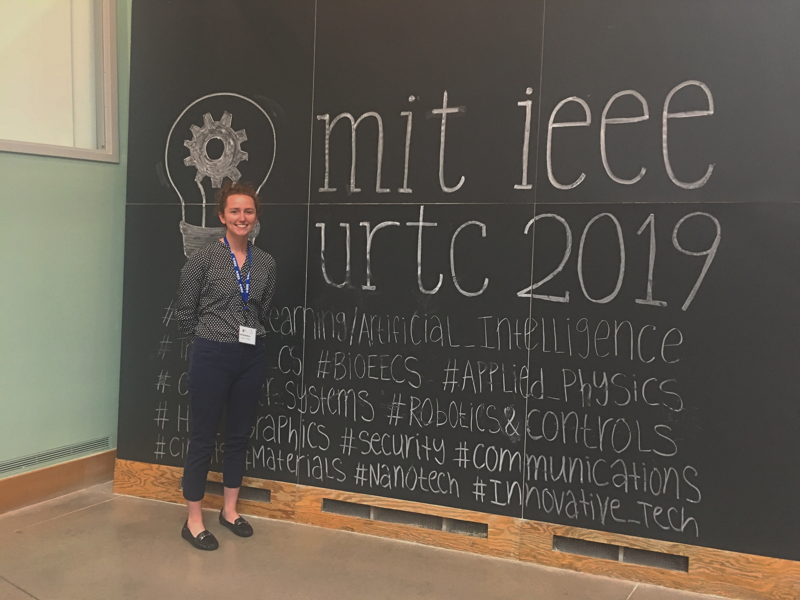
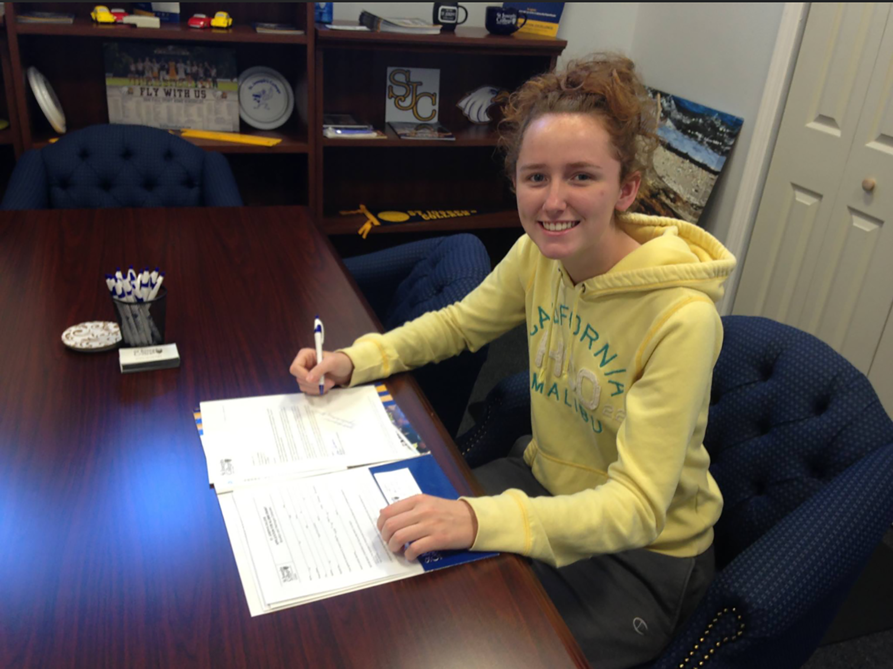

Honors and Awards
Upsilon Pi Epsilon Scholar of the Year
In September 2019, I was chosen as UPE's 2019 International scholar of the year. This award is an incredible honor to have received. Here's a link to the award newsletter. Also, here is the OnCampus SJCNY article written about it!My research accepted for presentation at MIT
This past October, I had the incredible honor of presenting the research I conducted over the summer during my time at Brookhaven National Laboratory at the Undergraduate Research Technology Conference, run by IEEE and MIT. This was, as you could imagine, an unforgettable experience. I was flown out to Massachusetts and I stayed with an MIT student in their dorm for the weekend. Essentially, I was an MIT student for a couple of days and was able to present my work at the institution. An absolutely amazing experience that I will carry with me forever.
Presidential Scholarship - SJC
Upon entering college, I received an annual full-tuition scholarship from St. Joseph's College due to demonstrated academic excellence in high school, well-roundedness and extracirricular involvement. Specifically, I surpassed a GPA requirement and SAT score requirement. Fun fact, I took the SAT 9 times in high school because I wanted to see how high of a score that I could acheive.